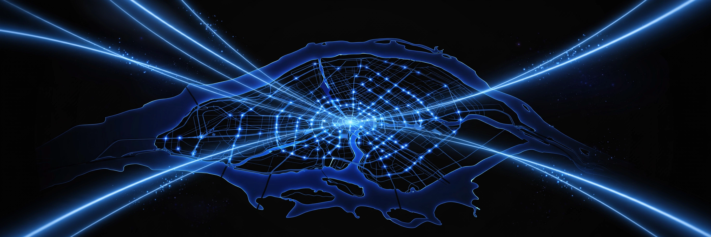

Ovia Inc — Articles
Le retour d'Ovia : quatre ans de Context Engineering

Nous sommes de retour. Depuis décembre 2022, nous construisons chez Ovia Inc une intelligence artificielle pratique : context engineering, agents IA, apprentissage automatique et systèmes de données pensés pour des opérations réelles.
Quatre ans de context engineering, racontés depuis le terrain : le contexte juste, au bon moment, pour des agents et des équipes qui livrent en production.
Une expertise certifiée soutient le travail — NVIDIA-Certified Professional : AI Operations, ainsi que les formations Agents et Deep RL de Hugging Face, terminées en mai 2025.
Pour la suite : des notes de cas, des leçons de terrain et des histoires de projets, partagées ici régulièrement, en français, en anglais et en espagnol.